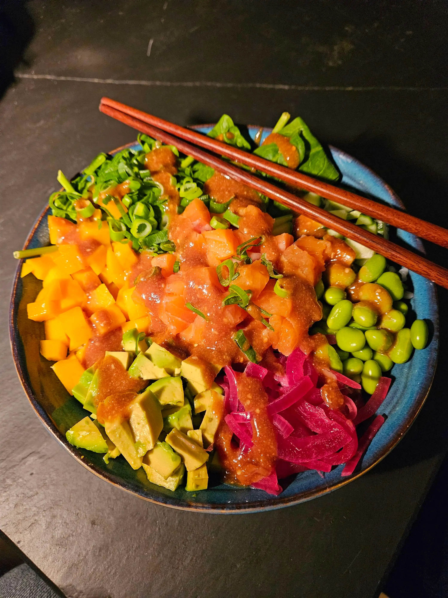

Recipe:
Recipe name

- Time
- 30 min
- Utilities:
- 4
- Serves:
- 2
Ingredients
Part 1 of 2
- Bacon
- 1 tsp butter
- 2 æg yolks
- 50 gram parmesan
- Black pebber, freshly ground
Part 2 of 2
- 250 gram spaghetti
- 50 gram parmesan
Method
-
Mix 50gram of parmesan together with egg yolks in a bowel, then set aside.
-
Boil the pasta al dente; reference your pack for how long the pasta needs.
-
Cut up the bacon in thinner pices. While the pasta is boiling, fry the bacon on a pan at high temperature until it start getting crispy, but is still somewhat chewy.
-
Once the pasta is done pull it off the heat. Save a bit of pasta water and drain the rest.
-
Add pasta to the frying pan, take it off the heat, then add the egg and parmesan mix. Stir in the pan while adding a bit of pasta water.
-
Top with additional parmesan cheese, add plenty of black pebber and serve